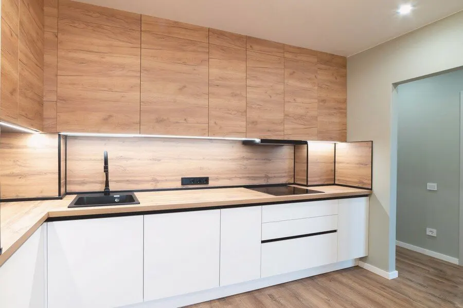
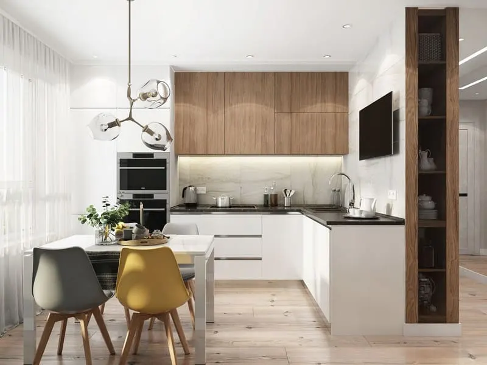
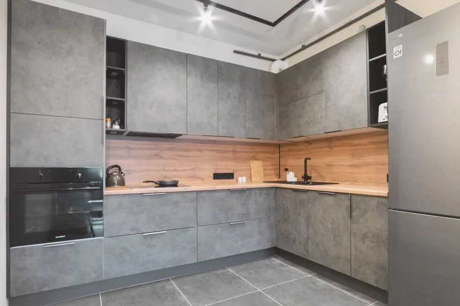
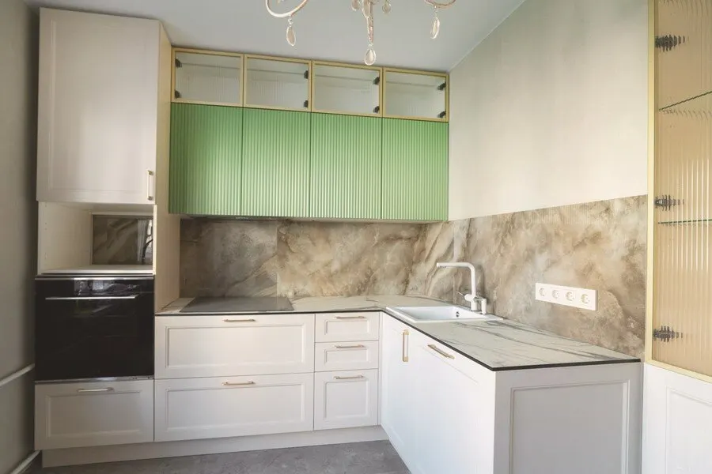

Кухни на заказ · Санкт-Петербург
Кухни на заказ в Санкт-Петербурге – срок 21 день
Серии от 14 900 ₽ за 1 м, цветовых решений – до 980. Посчитайте кухню по длине: ориентир цены сразу. Рейтинг 5,0 на Яндекс Картах.

- Срок изготовления – 21 день
- От 14 900 ₽ за 1 м – серия «Барселона»
- Собственное производство
Цена за 1 метр
Цены из прайса на карточке в Яндекс Картах, срок изготовления у всех серий – 21 день. Точную смету дизайнер считает по вашей планировке.
Кухни на заказ, серии
- Кухня «Барселона»собственное производство, более 980 цветовых решений14 900 ₽ за 1 м
- Кухня «Осло»немецкая фурнитура Hettich16 580 ₽ за 1 м
- Кухня «Киото»гарантия 24 месяца, более 500 цветовых решений17 400 ₽ за 1 м
- Кухня «Будапешт»немецкая фурнитура, производство в СПб17 460 ₽ за 1 м
- Кухня «Гавана»собственное производство, более 980 цветовых решений17 900 ₽ за 1 м
- Кухня «Мадрид»возможна различная комплектация18 700 ₽ за 1 м
- Кухня «Сеул»более 800 цветовых решений19 200 ₽ за 1 м
- Кухня «Калининград»гарантия 24 месяца19 900 ₽ за 1 м
Цены взяты с карточки на Яндекс Картах (обновлялись давно) – актуальную цену подтверждает менеджер. Техника и мойка в прайсе не указаны.
Как заказать
- 01
Серия и цвет
Выбираем серию и подбираем цвет к интерьеру вместе с дизайнером.
- 02
Замер
Дизайнер-замерщик приезжает с замерами и учитывает пожелания.
- 03
Проект под планировку
Помогаем вписать кухню в небольшие и нестандартные помещения.
- 04
Изготовление – 21 день
Срок изготовления указан у всех серий в прайсе.
- 05
Доставка и сборка
Мастера привозят и собирают кухню на месте.



Что указано в прайсе
Срок изготовления 21 день
Указан у каждой серии кухонь в прайсе.
Собственное производство
Указано у серий «Барселона» и «Гавана»; у «Будапешта» – производство в СПб.
Немецкая фурнитура
У серий «Осло» и «Будапешт»: Hettich и немецкая фурнитура.
Гарантия 24 месяца
Указана у серий «Киото» и «Калининград».
Отзывы с Яндекс.Карт
«Мне понравилось, как кропотливо мы вместе с сотрудником подбирали цвет кухни к интерьеру, их просто миллион! Цветов. Это было забавно, но в результате нашли идеальный салатовый, сроки быстрые, еще чуть-чуть и будет готова кухня. Спасибо»
Динара Сафарян · 23 мая 2025
«Кухню заказывала для хрущёвки, думала вообще не получится. Но Андрей предложил компактную с выдвижными полками кухню. Смотрится красиво, удобно всё расположено. Монтаж быстрый, мастера приехали точно в срок. Спасибо!»
Людмила Ш. · 23 сентября
«Заказывал здесь кухню. Дизайнер учёл все пожелания, посоветовал, на чем можно сэкономить. Изготовили быстро и установили без проблем. Всем доволен.»
Григорий Ч. · 11 сентября 2025
Отзывы с карточки на Яндекс.Картах, без правок.
Контакты
- Адрес
- Спасский переулок, 14/35, офис 312, Санкт-Петербург
- Часы
- Пн–Вс 10:00–21:00
- Телефон
- +7 (812) 409-90-24